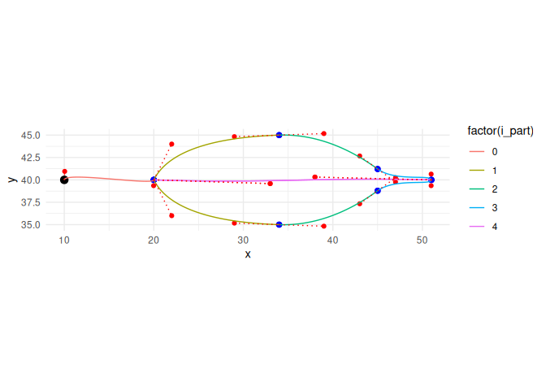
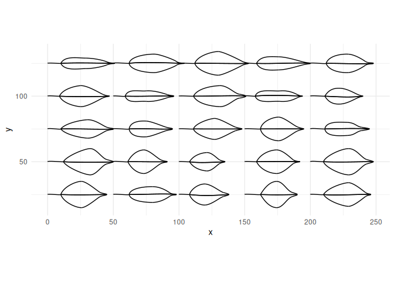
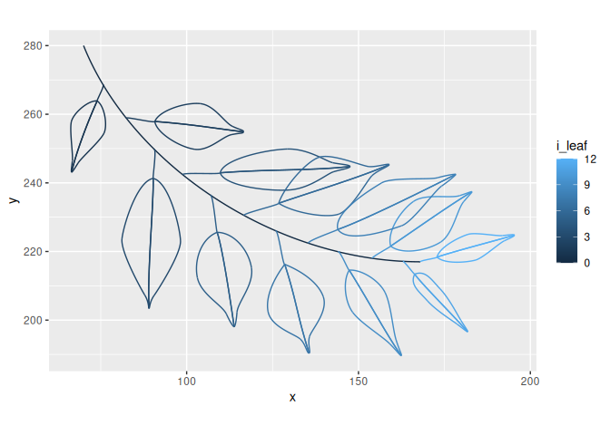
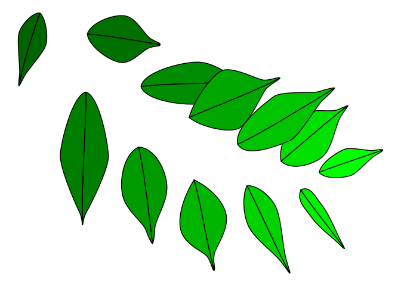

Generate benjamini leaves with bezier curves
The goal of this package is to generate shapes in the form of ficus benjamina leaves (weeping fig) with bezier curves. It is heavily inspired by the awesome flametree package.
Installation
You can install the newest version of ggbenjamini from github with:
# install.packages("remotes")
# (if not installed yet)
remotes::install_github("urswilke/ggbenjamini")Illustration of the generated data
The package generates bezier curves that imitate the shape of the leaves of a ficus benjamini. The main function is benjamini_leaf():
df <- benjamini_leaf()It results in a dataframe of multiple bezier curves representing the shape of a leaf. The first column element indicates which part of the leaf the bezier describes, and can take the values “stalk,” “half 2” and “half 1.” i_part denotes the id of the bezier curve, and x & y its point coordinates. The column param_type denotes the type of the point in the bezier curve.
knitr::kable(df) Show dataframe of benjamini leaf bezier curves
|element | i_part| x| y|param_type |
|:-------|------:|--------:|--------:|:----------------------|
|stalk | 0| 10.00000| 40.00000|bezier start point |
|stalk | 0| 10.04566| 40.94991|bezier control point 1 |
|stalk | 0| 19.97942| 39.35523|bezier control point 2 |
|stalk | 0| 20.00000| 40.00000|bezier end point |
|half 2 | 1| 20.00000| 40.00000|bezier start point |
|half 2 | 1| 22.00000| 36.00000|bezier control point 1 |
|half 2 | 1| 29.00000| 35.17208|bezier control point 2 |
|half 2 | 1| 34.00000| 35.00000|bezier end point |
|half 2 | 2| 34.00000| 35.00000|bezier start point |
|half 2 | 2| 39.00000| 34.82792|bezier control point 1 |
|half 2 | 2| 43.00000| 37.33259|bezier control point 2 |
|half 2 | 2| 45.00000| 38.78709|bezier end point |
|half 2 | 3| 45.00000| 38.78709|bezier start point |
|half 2 | 3| 47.00000| 40.24159|bezier control point 1 |
|half 2 | 3| 50.97942| 39.35523|bezier control point 2 |
|half 2 | 3| 51.00000| 40.00000|bezier end point |
|half 2 | 4| 51.00000| 40.00000|bezier start point |
|half 2 | 4| 38.00000| 40.31141|bezier control point 1 |
|half 2 | 4| 33.00000| 39.58294|bezier control point 2 |
|half 2 | 4| 20.00000| 40.00000|bezier end point |
|half 1 | 1| 20.00000| 40.00000|bezier start point |
|half 1 | 1| 22.00000| 44.00000|bezier control point 1 |
|half 1 | 1| 29.00000| 44.82792|bezier control point 2 |
|half 1 | 1| 34.00000| 45.00000|bezier end point |
|half 1 | 2| 34.00000| 45.00000|bezier start point |
|half 1 | 2| 39.00000| 45.17208|bezier control point 1 |
|half 1 | 2| 43.00000| 42.66741|bezier control point 2 |
|half 1 | 2| 45.00000| 41.21291|bezier end point |
|half 1 | 3| 45.00000| 41.21291|bezier start point |
|half 1 | 3| 47.00000| 39.75841|bezier control point 1 |
|half 1 | 3| 50.97942| 40.64477|bezier control point 2 |
|half 1 | 3| 51.00000| 40.00000|bezier end point |
|half 1 | 4| 51.00000| 40.00000|bezier start point |
|half 1 | 4| 38.00000| 40.31141|bezier control point 1 |
|half 1 | 4| 33.00000| 39.58294|bezier control point 2 |
|half 1 | 4| 20.00000| 40.00000|bezier end point |The meaning is best illustrated with a plot:
# rearrange data to display segments:
segments <- df %>%
select(-param_type) %>%
group_by(element, i_part) %>%
mutate(j = c(1, 2, 1, 2)) %>%
ungroup() %>%
pivot_wider(
names_from = j,
values_from = c(x, y),
values_fn = list
) %>%
unnest(c(x_1, x_2, y_1, y_2))
ggplot(df, aes(x = x, y = y)) +
geom_point(color = "red") +
geom_point(
data = df %>%
group_by(element, i_part) %>%
slice(c(1, 4)),
color = "blue",
size = 2
) +
geom_point(
data = df %>% slice(1),
color = "black",
size = 3
) +
geom_bezier(
aes(
group = interaction(element, i_part),
color = factor(i_part)
)) +
geom_segment(
data = segments,
aes(
x = x_1,
xend = x_2,
y = y_1,
yend = y_2
),
linetype = "dotted",
color = "red"
) +
coord_equal() +
theme_minimal()
The black point represents the leaf origin. This and the blue points denote the start/end points of the bezier curves, and the red dots the positions of the control points. The leaf is cut in two halves (element == "half 1" OR "half 2") by the lines where i_part == 4 (which represents the midvein of the leaf). The exact dimensions of these coordinates are generated by random numbers in certain ranges (see the definition of the argument leaf_params in benjamini_leaf()).
Illustration of the randomness
In order to show the variations of the benjamini_leaf() (if parameters are not explicitly specified), let’s only pass the position of the leaf origins and let the function randomly generate the rest of the shapes:
dfb <- expand_grid(
x = seq(0, 200, 50),
y = seq(25, 125, 25)
) %>%
transpose() %>%
map_dfr(
~benjamini_leaf(gen_leaf_parameters(
x0 = .x$x,
y0 = .x$y
)),
.id = "i_leaf"
) %>%
unite(i, i_leaf, i_part, element, remove = FALSE)
ggplot(dfb) +
geom_bezier(aes(x = x, y = y, group = i)) +
coord_equal() +
theme_minimal()
Branches
You can also generate branches of leaves with the command benjamini_branch() (see the vignettes vignette("create_benjamini_polygons") and vignette("create_benjamini_tree") for examples):
df_branch <- benjamini_branch() %>%
# we add a unique identifier `b` for all beziers:
unite(b, i_leaf, element, i_part, remove = FALSE)
df_branch
#> # A tibble: 436 × 8
#> b i_leaf element i_part x y type param_type
#> <chr> <dbl> <chr> <dbl> <dbl> <dbl> <chr> <chr>
#> 1 0_branch_1 0 branch 1 70 280 branch bezier start point
#> 2 0_branch_1 0 branch 1 84 245 branch bezier control poin…
#> 3 0_branch_1 0 branch 1 126 217 branch bezier control poin…
#> 4 0_branch_1 0 branch 1 168 217 branch bezier end point
#> 5 1_stalk_0 1 stalk 0 75.7 269. leaf_bezier bezier start point
#> 6 1_stalk_0 1 stalk 0 76.2 268. leaf_bezier bezier control poin…
#> 7 1_stalk_0 1 stalk 0 73.8 264 leaf_bezier bezier control poin…
#> 8 1_stalk_0 1 stalk 0 74.0 264. leaf_bezier bezier end point
#> 9 1_half 2_1 1 half 2 1 74.0 264. leaf_bezier bezier start point
#> 10 1_half 2_1 1 half 2 1 71.4 264. leaf_bezier bezier control poin…
#> # … with 426 more rowsAs the following plot also shows, benjamini_branch() adds another column i_leaf specifying the index of the leaf on the branch.
df_branch %>%
ggplot() +
geom_bezier(aes(x = x, y = y, group = b, color = i_leaf)) +
coord_equal()
Polygons
If you want to fill the leaves with color, you can use bezier_to_polygon() to approximate the bezier curves leaf parts with polygons:
df_polygons <- df_branch %>%
filter(str_detect(element, "^half [12]$")) %>%
unite(idx, i_leaf, element, remove = FALSE) %>%
bezier_to_polygon(idx, i_leaf, element, i_part, n = 100)
ggplot(
data = df_polygons,
aes(x = x, y = y, group = idx, fill = i_leaf)
) +
geom_polygon(show.legend = FALSE, color = "black") +
scale_fill_gradientn(colours = c("darkgreen", "green")) +
theme_void() 
If you want to know more have a look in vignette("create_benjamini_polygons") .
svg
You can also transform the leaf data to svgs. Have a look in vignette("create_benjamini_svg") for an example to generate svg images.
R packages used
This package stands on the shoulders of giants. It was only possible thanks to the following libraries:
- base (R Core Team 2021a)
- pkgdown (Wickham and Hesselberth 2020)
- stringr (Wickham 2019)
- dplyr (Wickham et al. 2021)
- ggplot2 (Wickham 2016)
- purrr (Henry and Wickham 2020)
- tidyr (Wickham 2021)
- ggforce (Pedersen 2021)
- magrittr (Bache and Wickham 2020)
- tibble (Müller and Wickham 2021)
- rlang (Henry and Wickham 2021)
- grid (R Core Team 2021b)
- prismatic (Hvitfeldt 2021)
- flametree (Navarro 2021)
- rsvg (Ooms 2021b)
- minisvg (FC 2021)
- knitr (Xie 2014)
- rmarkdown (Xie, Dervieux, and Riederer 2020)
- testthat (Wickham 2011)
- vdiffr (Henry et al. 2021)
- ambient (Pedersen and Peck 2020)
- covr (Hester 2020)
- usethis (Wickham, Bryan, and Barrett 2021)
- stats (R Core Team 2021c)
- glue (Hester 2021)
- scales (Wickham and Seidel 2020)
- magick (Ooms 2021a)
References
Bache, Stefan Milton, and Hadley Wickham. 2020. Magrittr: A Forward-Pipe Operator for r. https://CRAN.R-project.org/package=magrittr.
FC, Mike. 2021. Minisvg: SVG Document Builder.
Henry, Lionel, Thomas Lin Pedersen, T Jake Luciani, Matthieu Decorde, and Vaudor Lise. 2021. Vdiffr: Visual Regression Testing and Graphical Diffing. https://CRAN.R-project.org/package=vdiffr.
Henry, Lionel, and Hadley Wickham. 2020. Purrr: Functional Programming Tools. https://CRAN.R-project.org/package=purrr.
———. 2021. Rlang: Functions for Base Types and Core r and ’Tidyverse’ Features. https://CRAN.R-project.org/package=rlang.
Hester, Jim. 2020. Covr: Test Coverage for Packages. https://CRAN.R-project.org/package=covr.
———. 2021. Glue: Interpreted String Literals. https://CRAN.R-project.org/package=glue.
Hvitfeldt, Emil. 2021. Prismatic: Color Manipulation Tools. https://CRAN.R-project.org/package=prismatic.
Müller, Kirill, and Hadley Wickham. 2021. Tibble: Simple Data Frames. https://CRAN.R-project.org/package=tibble.
Navarro, Danielle. 2021. Flametree: Generate Random Tree-Like Images. https://CRAN.R-project.org/package=flametree.
Ooms, Jeroen. 2021a. Magick: Advanced Graphics and Image-Processing in r. https://CRAN.R-project.org/package=magick.
———. 2021b. Rsvg: Render SVG Images into PDF, PNG, PostScript, or Bitmap Arrays. https://CRAN.R-project.org/package=rsvg.
Pedersen, Thomas Lin. 2021. Ggforce: Accelerating ’Ggplot2’. https://CRAN.R-project.org/package=ggforce.
Pedersen, Thomas Lin, and Jordan Peck. 2020. Ambient: A Generator of Multidimensional Noise. https://CRAN.R-project.org/package=ambient.
R Core Team. 2021a. R: A Language and Environment for Statistical Computing. Vienna, Austria: R Foundation for Statistical Computing. https://www.R-project.org/.
———. 2021b. R: A Language and Environment for Statistical Computing. Vienna, Austria: R Foundation for Statistical Computing. https://www.R-project.org/.
———. 2021c. R: A Language and Environment for Statistical Computing. Vienna, Austria: R Foundation for Statistical Computing. https://www.R-project.org/.
Wickham, Hadley. 2011. “Testthat: Get Started with Testing.” The R Journal 3: 5–10. https://journal.r-project.org/archive/2011-1/RJournal_2011-1_Wickham.pdf.
———. 2016. Ggplot2: Elegant Graphics for Data Analysis. Springer-Verlag New York. https://ggplot2.tidyverse.org.
———. 2019. Stringr: Simple, Consistent Wrappers for Common String Operations. https://CRAN.R-project.org/package=stringr.
———. 2021. Tidyr: Tidy Messy Data. https://CRAN.R-project.org/package=tidyr.
Wickham, Hadley, Jennifer Bryan, and Malcolm Barrett. 2021. Usethis: Automate Package and Project Setup. https://CRAN.R-project.org/package=usethis.
Wickham, Hadley, Romain François, Lionel Henry, and Kirill Müller. 2021. Dplyr: A Grammar of Data Manipulation. https://CRAN.R-project.org/package=dplyr.
Wickham, Hadley, and Jay Hesselberth. 2020. Pkgdown: Make Static HTML Documentation for a Package. https://CRAN.R-project.org/package=pkgdown.
Wickham, Hadley, and Dana Seidel. 2020. Scales: Scale Functions for Visualization. https://CRAN.R-project.org/package=scales.
Xie, Yihui. 2014. “Knitr: A Comprehensive Tool for Reproducible Research in R.” In Implementing Reproducible Computational Research, edited by Victoria Stodden, Friedrich Leisch, and Roger D. Peng. Chapman; Hall/CRC. http://www.crcpress.com/product/isbn/9781466561595.
Xie, Yihui, Christophe Dervieux, and Emily Riederer. 2020. R Markdown Cookbook. Boca Raton, Florida: Chapman; Hall/CRC. https://bookdown.org/yihui/rmarkdown-cookbook.